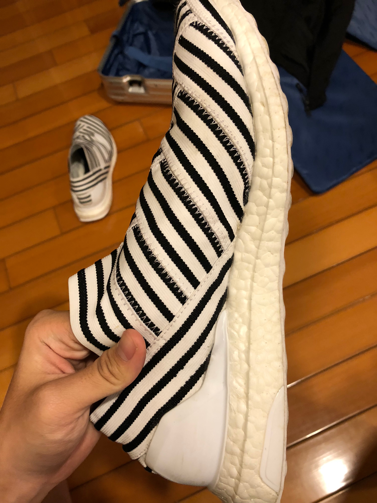
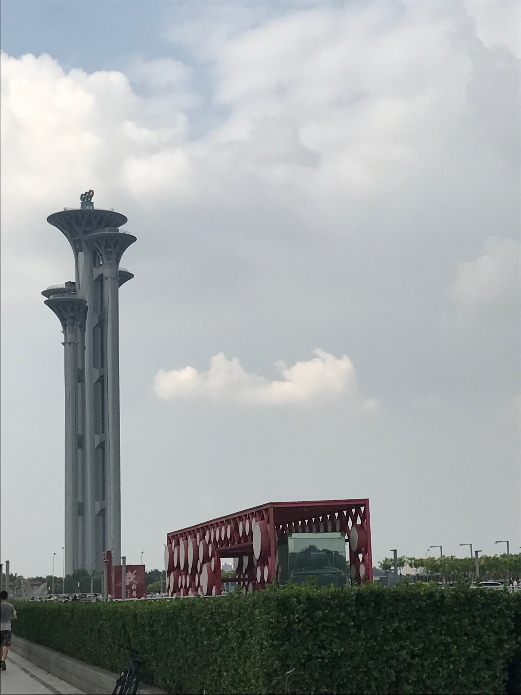
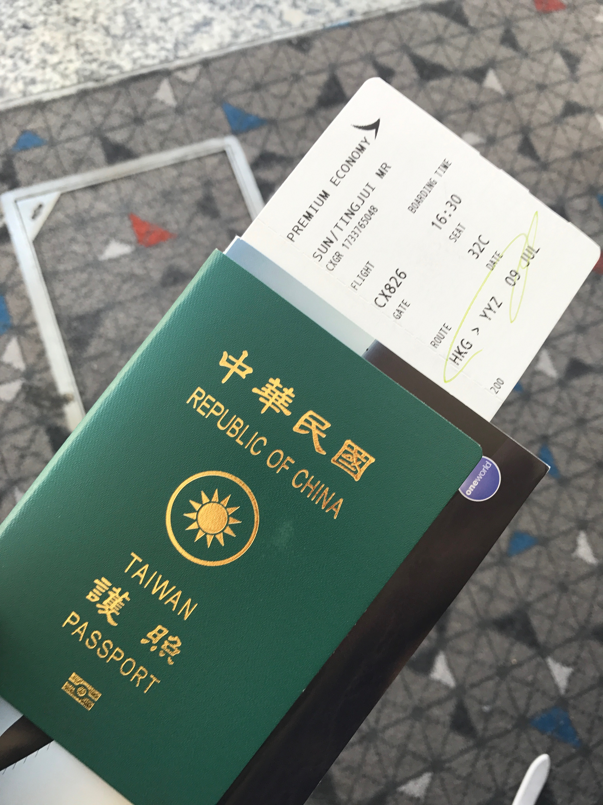
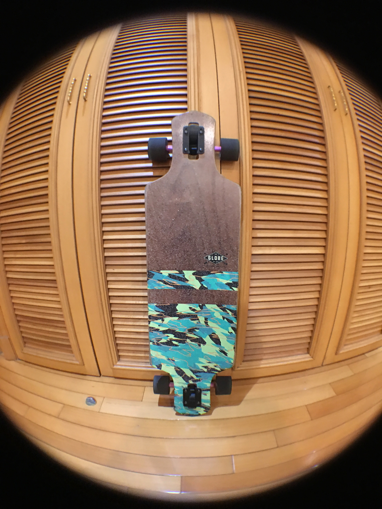
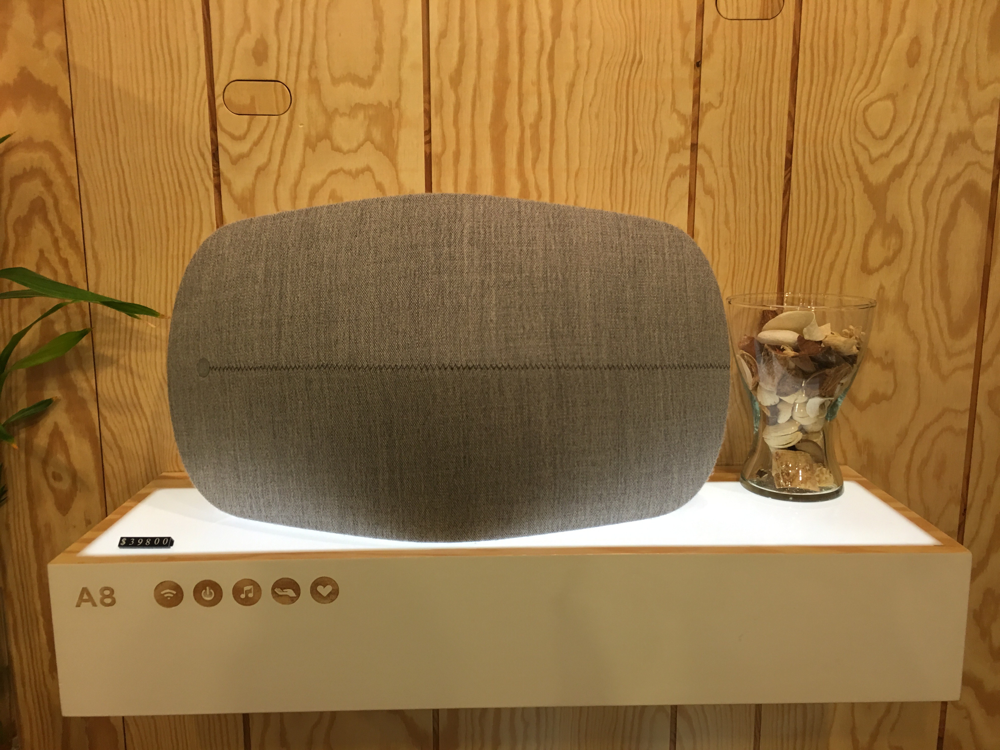
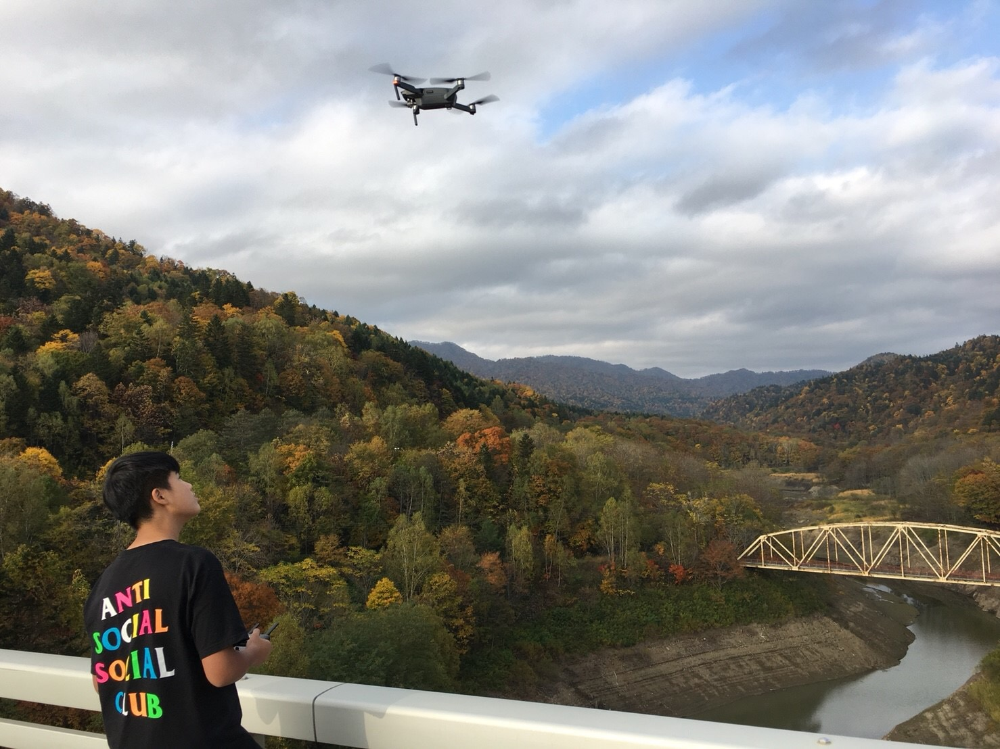
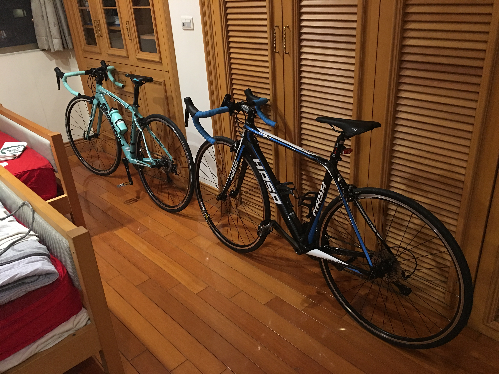
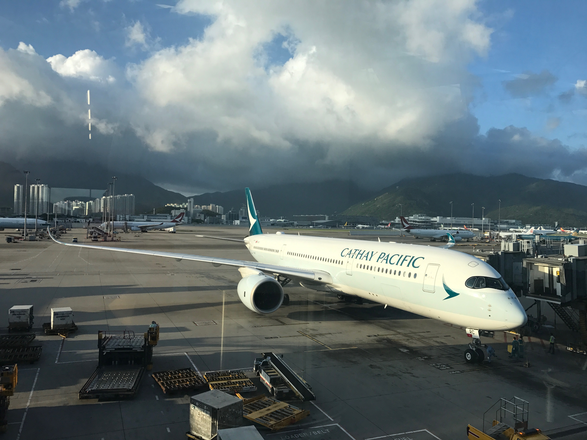
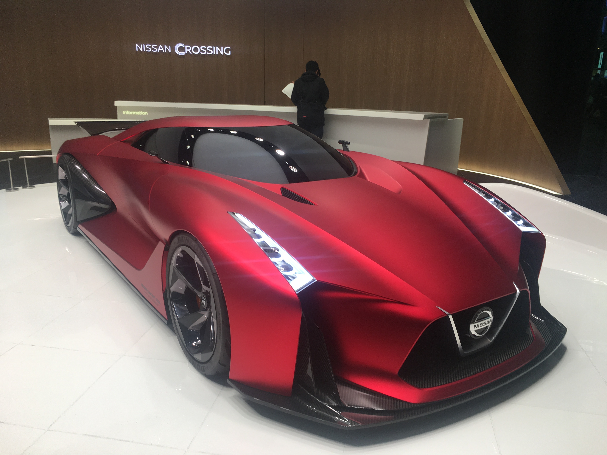

1.New communication tools-smart phones (Apple IphoneX)
1.New communication tools-smart phones (Apple IphoneX)
1.New communication tools-smart phones (Apple IphoneX)

2.New technology to make shoes. new vamp
and new wear-resistant soles (Adidas Ultra Boost)

3.New way to build a special building (Beijing Olympics building)
>

4.The new passport with electronic chip inside (Taiwan R.O.C)
>

5.New camera lens which can put on smartphones (Fisheye lens)
>

6.A new generation bluetooth speaker (B&O A8)
>

7.Personal unmanned flying vehicles with camera (DJI Mavic)
>

8.Road bike made by new technology (HASA R1)
>

9.Passenger aircraft made by new technology (Airbus A350)
>

10.New generation cars made by new technology (Nissan Concept 2020 Vision Gran Turismo)
>